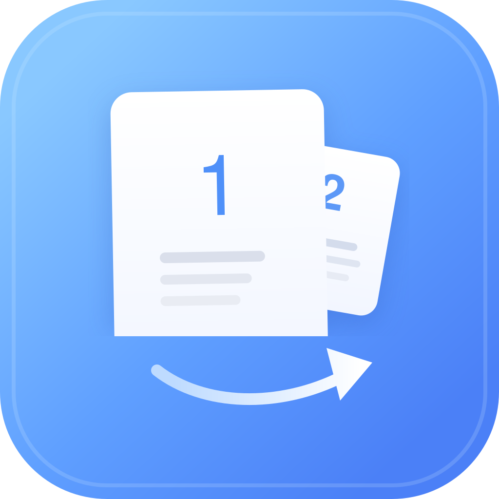

macOS with Homebrew
Build the app locally from source with Homebrew to avoid Gatekeeper rejecting an unsigned downloaded app bundle.
brew install hromau/tap/help-me-print
Help Me PrintManual duplex printing for everyday PDFs
A desktop duplex printing assistant that helps you print PDF documents double sided on a printer without automatic duplex support.
Install
Help Me Print is published for macOS, Windows, and Linux. Use a package manager where available.
Build the app locally from source with Homebrew to avoid Gatekeeper rejecting an unsigned downloaded app bundle.
brew install hromau/tap/help-me-printUse the Winget package once the Easure Help Me Print package is available.
winget install Easure.HelpMePrintAdd the signed APT repository, then install Help Me Print.
sudo apt update
sudo apt install help-me-printThe problem
Many home and office printers cannot print both sides automatically. Manual duplex printing usually means selecting odd and even pages, guessing page order, testing reload direction, and wasting paper when the stack comes out wrong.
Help Me Print turns that into a guided workflow for double-sided PDF printing. It prepares each pass, helps with odd and even pages printing, and remembers what worked for your printer.
Features
Open a PDF, choose a system printer, and let the app prepare the manual duplex print passes.
Print the first side, reload the stack, then print the second side with the right page order.
Learn output face, reload method, and page order for each printer instead of repeating trial runs.
Reuse saved local profiles and shared Easure cloud profiles when a known printer match exists.
По-русски
Help Me Print помогает, когда нужна дуплексная печать или двусторонняя печать на обычном принтере без автоматической печати с двух сторон.
Приложение ведет через ручную дуплексную печать: сначала печать нечетных или четных страниц, потом переворот стопки и второй проход.
Help Me Print запоминает порядок страниц, сторону выхода бумаги и способ перезагрузки для конкретного принтера.
Если принтер не умеет автоматическую двустороннюю печать, приложение помогает сделать то же самое вручную для PDF-документов.
FAQ
Use manual duplex printing: print one side of the document first, reload the paper stack, then print the other side. Help Me Print guides this workflow for PDFs and remembers the correct printer behavior.
A duplex printing assistant helps prepare double-sided output on printers that do not support automatic duplex. Help Me Print focuses on PDF documents, odd and even page passes, and reusable printer profiles.
Yes. You can print PDF double sided if the printer can print single-sided pages. Help Me Print helps you print PDF pages in the right order and tells you when to reload the stack.